4chan Reddit Twitter
14245 2437 5803 visual_climate_denial_zurich_sample
Quarto
Summary statistics of whole sample for Twitter, Reddit, and 4chan. Results of LLM pre-test.
Whole sample
Sample sizes and longitudinal distributions.
The sample sizes are:
The longitudinal distribution:
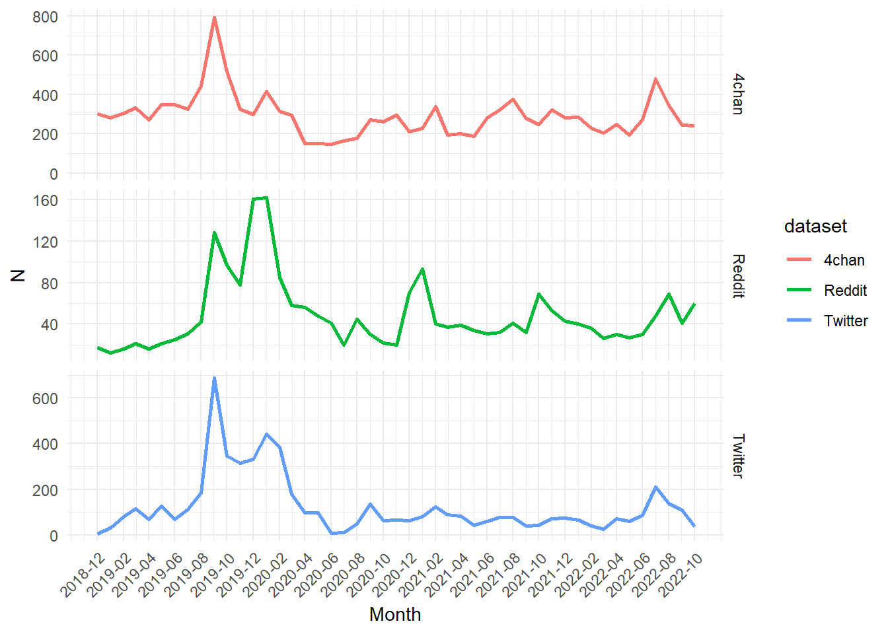
Even though the sample size is different, the main trends in posting activity align across all three platforms.
Multimodal analysis via vLLM
Sample selection & method
20 posts per platform per month (fewer, if only fewer available)
Overall sample sizes:
# A tibble: 3 × 2 dataset n <chr> <int> 1 4chan 983 2 Reddit 961 3 Twitter 909LLM prompt for multimodal (visual + textual) “frames” –> LLM should only return most salient frame:
# 'You are a coder trained to identify frames in visual and textual social media messages regarding climate change. The frames and codes are: # # Variable1: Happening vs. not happening “real frame”,´; Value1: 0 = No “real frame”, 1 = Convinced, 2 = Skeptical; Explanation1: The “real” frame addresses whether climate change is seen as present or not. # Convinced: Images & text in this frame explicitly mock climate change denial, presenting it as illogical or impossible. # Skeptical: Images & text here explicitly suggest climate change is natural, portraying it as part of Earth's long history. # The “real” frame addresses whether climate change is seen as present or not. # Ex.: Images & text either mock climate change denial as irrational or implausible, or depict climate change as a natural, long-standing part of Earth's history. # # Variable2: “Cause” frame: manmade or not; Value2: 0 = No “cause frame”, 1 = Convinced, 2 = Skeptical; Explanation2: This frame addresses (dis)belief in human-caused climate change. # Convinced: Images & text explicitly present the existence of human-made climate change as an unquestionable fact, offering no space for debate or doubt. Skeptical: In contrast, images & text explicitly appeal to common sense, using broad arguments to dismiss the idea of human-driven climate change without focusing on specific data. # # Variable3: “Impact” frame - consequences, Value3: 0 = No “impact frame”, 1 = Convinced, 2 = Skeptical: Explanation3: The "impact" frame in climate change media discourse addresses the risks of climate change, with images & text from both perspectives following similar patterns. # Convinced: Images & text explicitly show that climate change impacts will be severe, without specifying particular consequences. # Skeptical: Images & text explicitly emphasize that extreme weather events are natural and have long occurred, downplaying their connection to climate change. # # Variable4: How to handle the risk (“action” frame); Value4: 0 = No “action frame”, 1 = Convinced, 2 = Skeptical, Explanation4: The "action" frame in climate change media focuses on how to address the risks, with contrasting approaches from both perspectives. # Convinced: Images & text explicitly assert the grave risks of climate change and link them to necessary actions, often presenting statements as fact without supporting evidence, leveraging the anonymity of internet meme culture to reinforce their claims. # Skeptical: Images & text explicitly challenge the need for action by highlighting perceived hypocrisy in the calls for climate action, focusing criticism not just on public figures but on individuals as well. # # Variable5: Disinformation: Conspiracy theories, Value5: 0 = No, 1 = Yes; Explanation5: Stories without factual base as there is no established baseline for truth. They usually explain important events as secret plots by the government or powerful individuals. Conspiracies are, by definition, difficult to verify as true or false, and they are typically originated by people who believe them to be true. Evidence that refutes the conspiracy is regarded as further proof of the conspiracy. Some conspiracy theories may have damaging ripple-effects. # # Only code the most salient variable. That means only the single most prominent of the five frames should be coded as 1 or 2, the rest should remain 0. # # Make sure to take your time, to really actively think about whether something is convinced or skeptical regarding climate change. Reason about it. # # Please respond only in the form of a json, including the coded values of the frames and one paragraph of describing the picture-text-combination. Also, include one json element where you state in max. 3 sentences what the single most salient frame is and why. Don't use any quotation marks in this description paragraph! All in one json. # # The output format is: # { # "description": , # "salient_frame": { # "frame": Most salient variable, # "reason": # } # "Variable1": , # "Variable2": , # "Variable3": , # "Variable4": , # "Variable5": , # "Variable_reasoning": # } # In this task, every variable should be 0 except the single most salient one. # # # The text accompanying the picture is: # # 'LLM prompt to analyze visual elements and visual style
#| eval: true
# 'You are a coder trained to identify components of a visual social media message regarding climate change.
# Please code each category with a dummy variable non-existing = 0 and existing = 1.
# The categories are on two different levels: There are visual elements and there is visual style.
#
# Visual elements:
# Person (Description: An image of a person.)
# Animal (Description: An image of an animal such as a dog or a horse. (both rural and built, both on earth and beyond))
# Nature (Description: For example, includes fruit and vegetables, farm and farming or cornucopia. (both rural and built, both on earth and beyond))
# Landscape (Description: both rural and built, both on earth and beyond)
#
# Visual styles:
# Infographic/Scientific (Description: Science, infographic, technology, Nature, the cosmos, environment, Climate (change), CO2 emission, including climate policy)
# Screenshots of media texts (Description: Likely screenshots from a smart phone display or desktop. That includes Tweets or other social media posts, and entirely digitally written content.)
# Memes (Description: For example, includes memes such as doge, troll face, wojak, or is this loss.)
# Cartoon/Artwork (Description: Cartoon/Artwork)
# Other (Description: Image includes media related not captured by any of the above codes.)
#
# Please respond only in the form of a json, including the coded values and in case other = 1 a sentence of what the other is. Only do this, if every other code is 0. All in one json.
#
# The output format is:
# {
# "Person": ,
# "Animal": ,
# "Nature": ,
# "Landscape": ,
# "Infographic/Scientific": ,
# "Screenshots of media texts": ,
# "Memes": ,
# "Cartoon/Artwork": ,
# "Landscape": ,
# "Other":,
# "Description of other":
# }
#
# 'Results
Combine LLM classification dataframe:
- df head:
# A tibble: 6 × 15
id text media_link local_path date dataset month description
<chr> <chr> <chr> <chr> <IDate> <chr> <IDate> <chr>
1 DussdnZ… "How… http://pb… C:/Users/… 2018-12-18 Twitter 2018-12-01 The image …
2 DussdnZ… "How… http://pb… C:/Users/… 2018-12-18 Twitter 2018-12-01 The image …
3 DussdnZ… "How… http://pb… C:/Users/… 2018-12-18 Twitter 2018-12-01 The image …
4 DussdnZ… "How… http://pb… C:/Users/… 2018-12-18 Twitter 2018-12-01 The image …
5 DussdnZ… "How… http://pb… C:/Users/… 2018-12-18 Twitter 2018-12-01 The image …
6 DussdnZ… "How… http://pb… C:/Users/… 2018-12-18 Twitter 2018-12-01 The image …
# ℹ 7 more variables: `Description of other` <chr>, Variable <chr>,
# Value <chr>, VisualElements <chr>, ElementsValue <dbl>, VisualStyle <chr>,
# StyleValue <dbl>[1] "For analysis of 'objects of criticism' filter for unique IDs! Some rows are duplicate because of long format and multiple visual elements/styles!"[1] "Also, a lot of duplicates now, because of long format. For frame analysis or visual elements, remove the style value column first!"Climate change acknowledgment vs. denial
Overall:
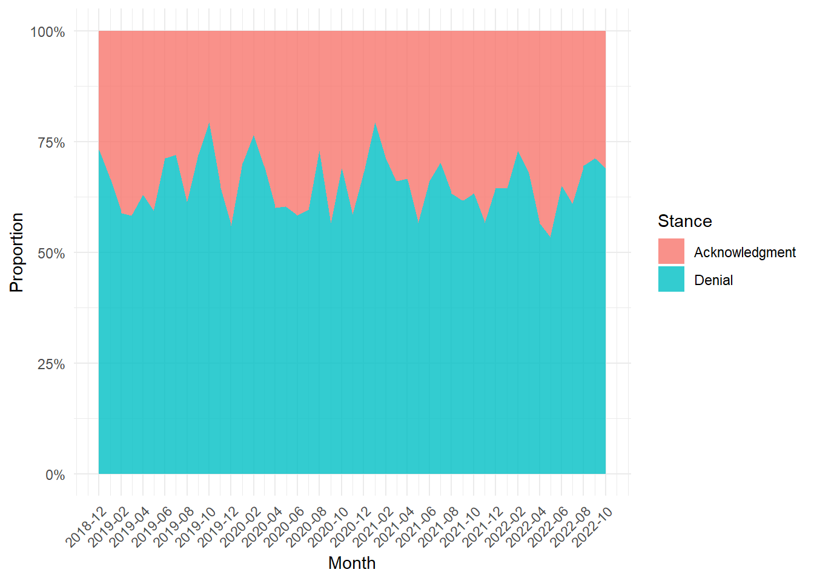
By platform
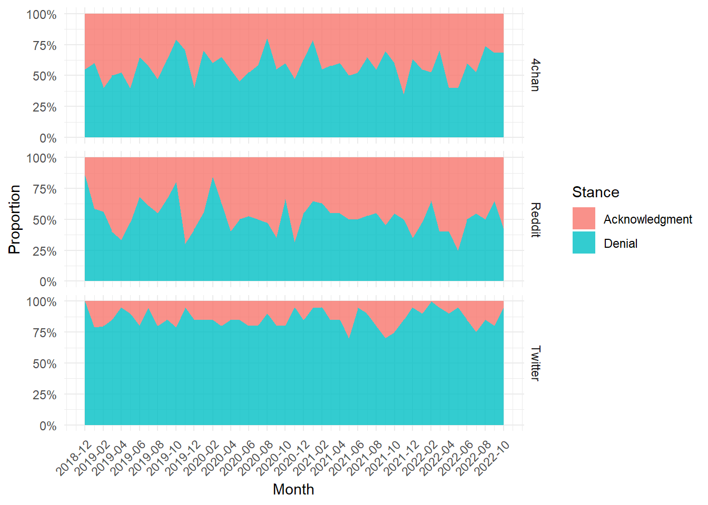
Overall objects of skepticism
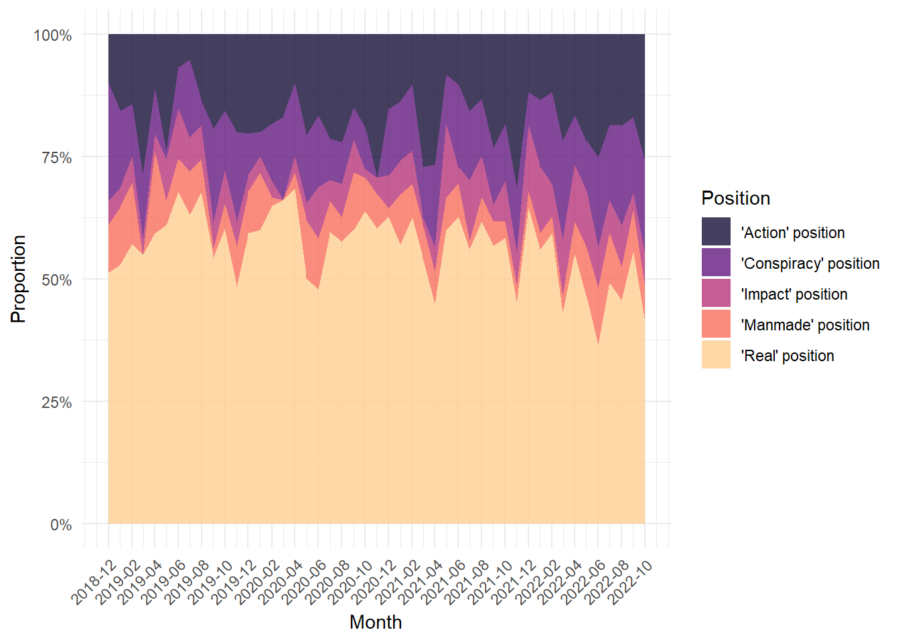
Only skeptics: objects of skepticism
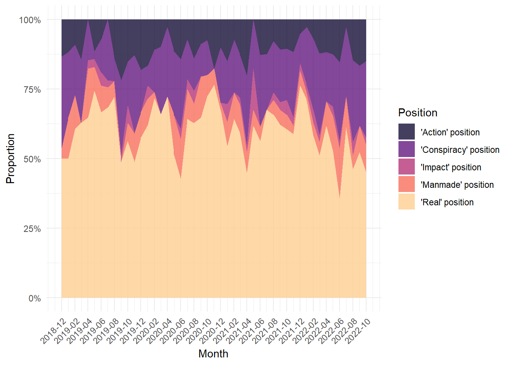
Objects of skepticism by platform
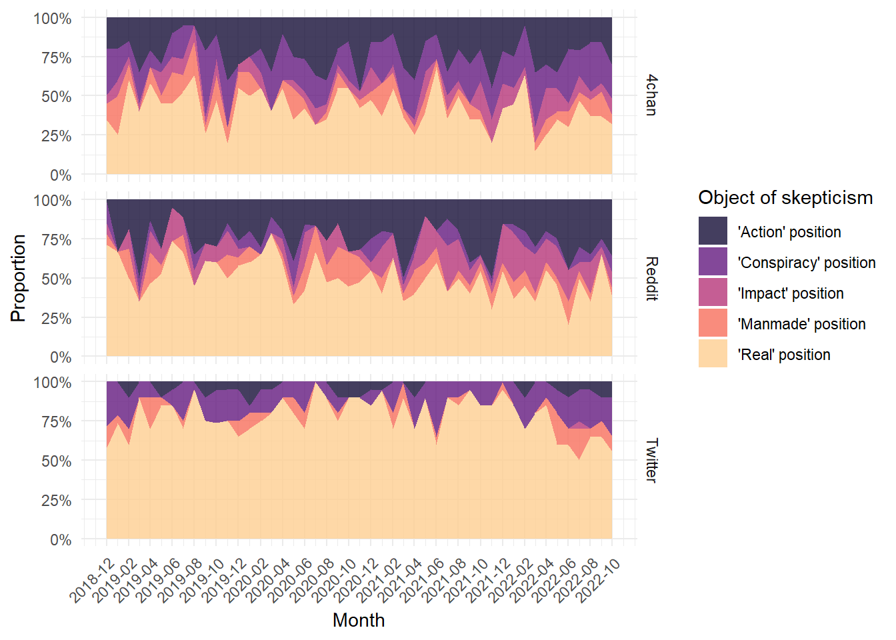
All platforms: Share of climate change as not “Real” as most salient position
4chan: Highest share of “Conspiracy” as object of criticism, also high share of “Action”
Reddit: Highest share of “Impact” as object of criticism, also high share of “Action”
Twitter: Mostly climate change as not “Real”, very little “Action”
Visual elements
Overall
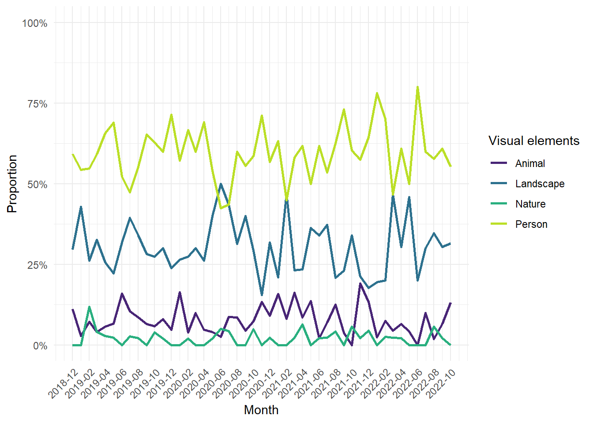
- Overall, the distribution of visual elements remains stable
Only denialists
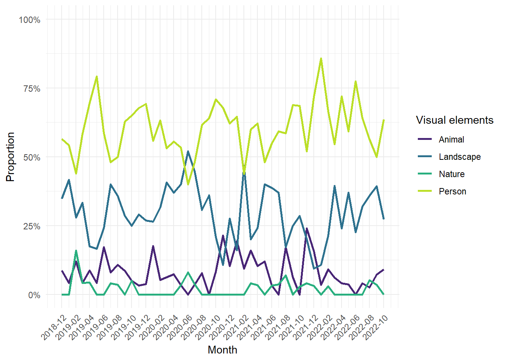
- no really obvious divergences
By object of skepticism
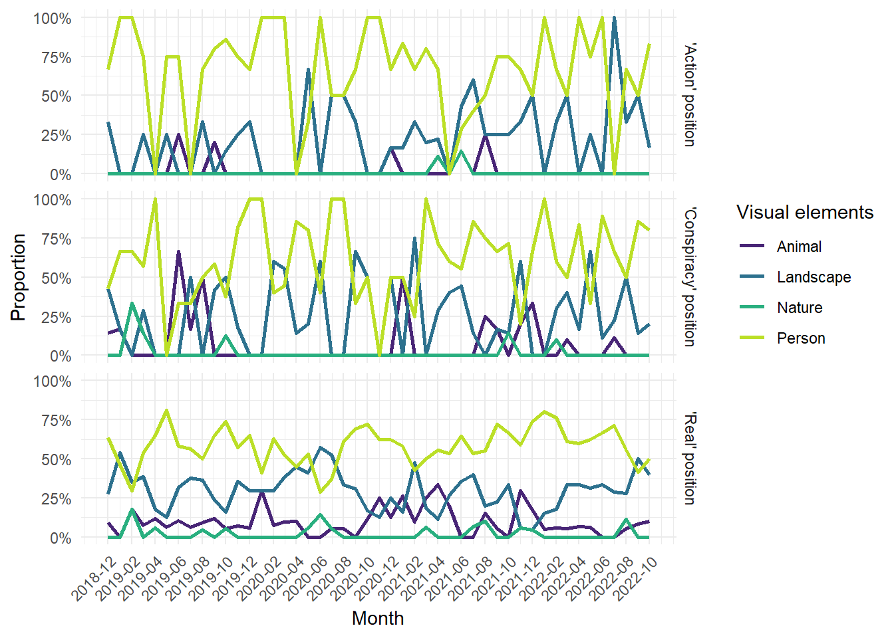
By platform
`summarise()` has grouped output by 'month', 'dataset'. You can override using
the `.groups` argument.Warning: Removed 36 rows containing missing values (`geom_line()`).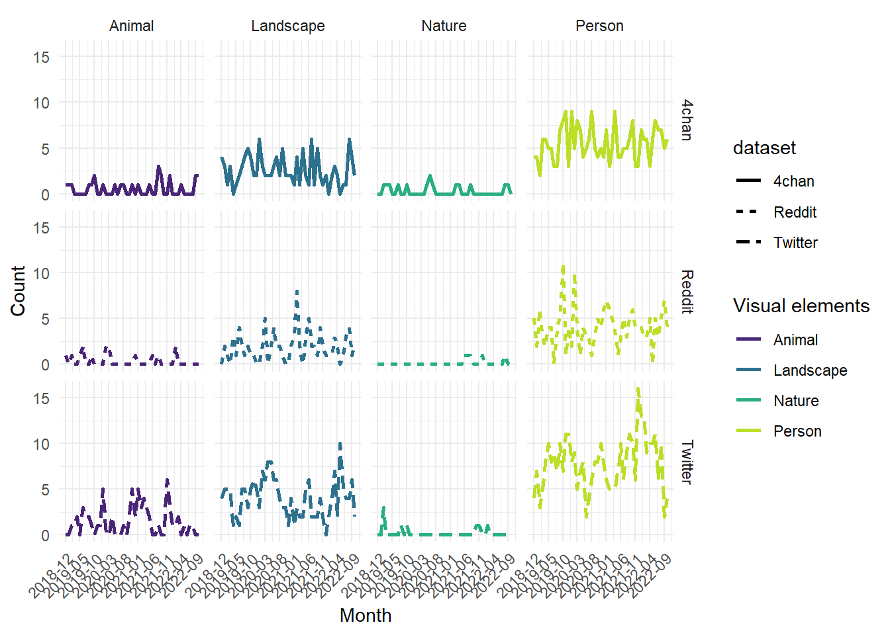
generally, I cannot really see a trend or any real differences between the platforms
should do distribution tests!
By object of denial and platform
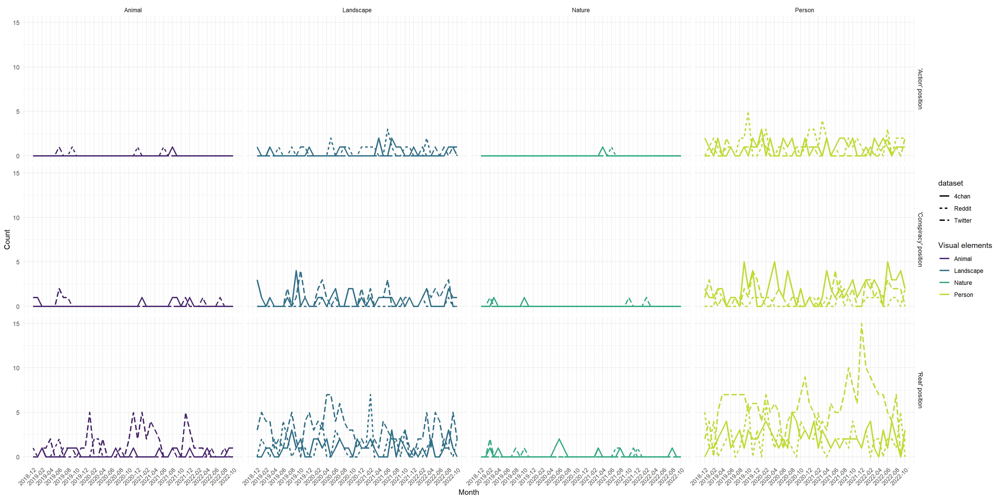
Visual styles
Visual elements
Overall
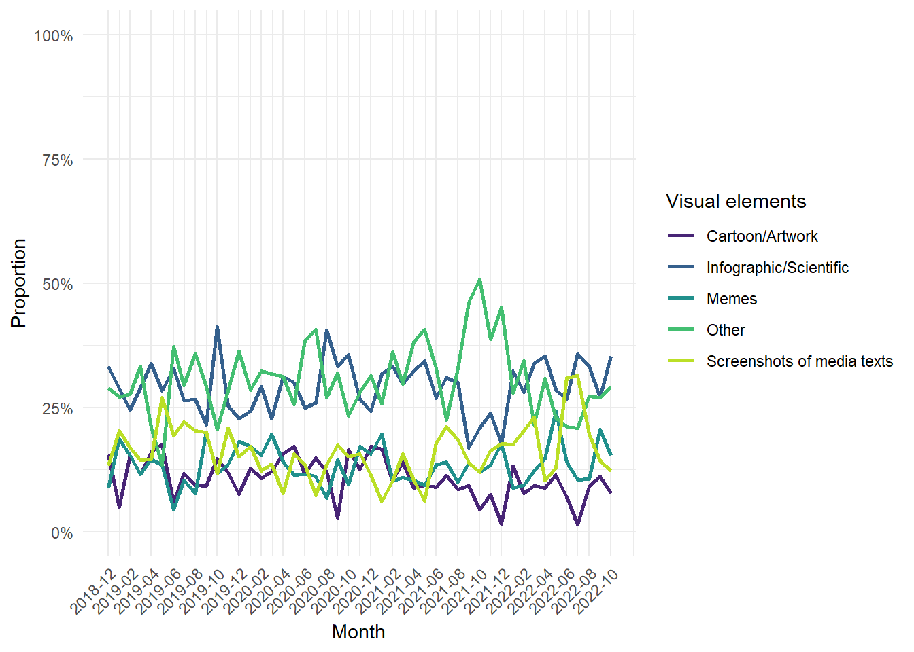
Relatively stable
Increases in Other and Screenshots in later periods
Only denialists
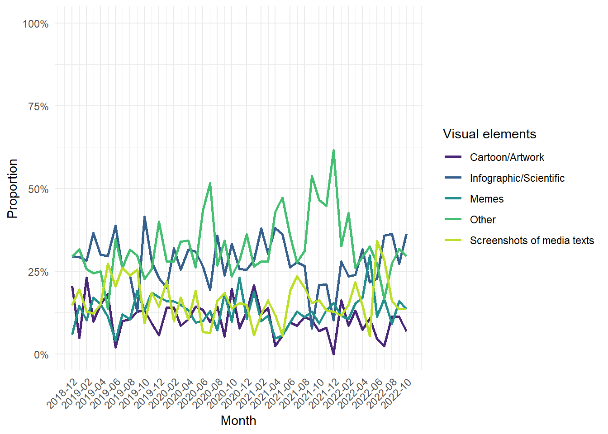
- not really different.
By platform
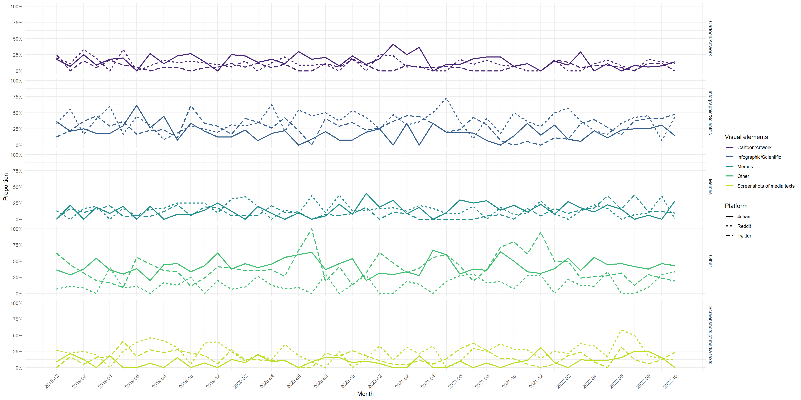
VisualStyle Dataset1 Dataset2 Correlation PValue
1 Cartoon/Artwork 4chan Reddit 0.33992051 0.01572627
2 Cartoon/Artwork 4chan Twitter -0.01795105 0.90152710
3 Cartoon/Artwork Reddit Twitter 0.14790462 0.30534317
4 Infographic/Scientific 4chan Reddit -0.05051389 0.72755829
5 Infographic/Scientific 4chan Twitter 0.12455585 0.38878134
6 Infographic/Scientific Reddit Twitter -0.04217765 0.77118360
7 Memes 4chan Reddit -0.28475206 0.04504021
8 Memes 4chan Twitter -0.12713141 0.37897032
9 Memes Reddit Twitter -0.18174626 0.20652219
10 Other 4chan Reddit -0.09219755 0.52425228
11 Other 4chan Twitter 0.22501345 0.11616766
12 Other Reddit Twitter -0.15290338 0.28910236
13 Screenshots of media texts 4chan Reddit -0.02516918 0.86225928
14 Screenshots of media texts 4chan Twitter -0.12960705 0.36968038
15 Screenshots of media texts Reddit Twitter 0.15862230 0.27122601
Significance
1 *
2 NS
3 NS
4 NS
5 NS
6 NS
7 *
8 NS
9 NS
10 NS
11 NS
12 NS
13 NS
14 NS
15 NS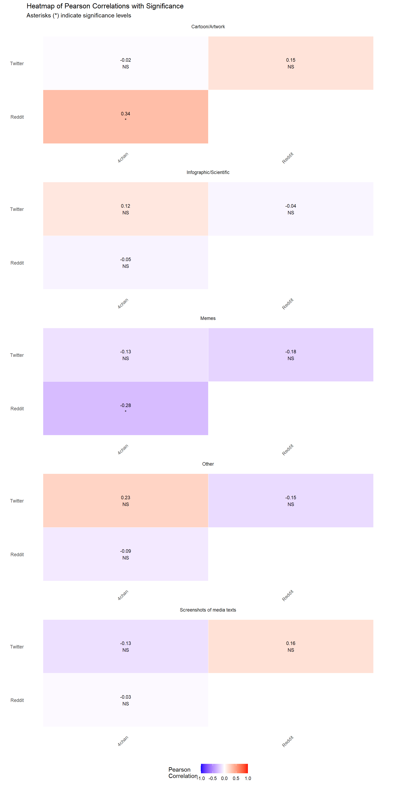
Validation
Draw 200 observations for coding.
40 for each possible frame. (var: “Variable”)
map classified df to get original data structure
draw 20 for intercoder reliability coding
assign Meg and Kilian each 90 for coding
Joining with `by = join_by(id)`
JZ JZ+KB KB
90 20 90